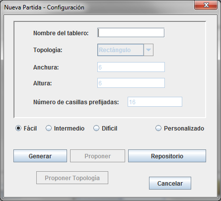

Seleccione el menú 'Archivo':

Si había una partida en curso, aparecerá un mensaje preguntando si se quiere guardar la partida.

A continuación, aparecerá el siguiente diálogo:

Hay tres dificultades (Fácil, Intermedio, Difícil) para las quales los parámetros anchura, altura, topología y número de casillas prefijadas estan ya preestablecidos y no se pueden cambiar. Por otro lado, está el modo personalizado, en el cual hay más opciones activas:
Podemos elegir el nombre del tablero, la topología, la anchura, la altura y el número de casillas prefijadas (éste último parámetro solo se tiene en cuenta para la generación automática de tableros).
Veamos la función de los botones inferiores:
Generar

Genera un tablero aleatorio con los parámetros actualmente seleccionados. Aparecerá el siguiente diálogo:
Hace una cuenta atrás y, en el caso que el tiempo acabe, aborta la operación. También es posible abortar manualmente, cerrando la ventana. Si en el momento de abortar, el sistema ha encontrado una solución, aunque con más casillas prefijadas de las que pedía el usuario, se informará de ello mediante el siguiente mensaje:

El usuario podrá elegir si desea resolver el tablero de todas formas o por el contrario descartarlo.
Proponer
Permite introducir los números prefijados en el tablero definido por la altura, anchura y topología seleccionadas, y después de ser comprobado por el sistema, en caso de que sea válido, poder resolverlo. Recuerde que una condición necesaria para que sea válido es que tenga como mínimo la primera y última casilla prefijada. Para facilitarle la tarea de introducir la última casilla (en algunas topologías no es fácil averiguarlo) le proporcionamos esa información en la parte inferior:

Para introducir un número, solo hay que hacer clic en la casilla correspondiente y aparecerá el siguiente diálogo:

Cuando hayamos terminado, pulsamos 'Aceptar' y el sistema comprobará que el Hidato introducido es válido. En caso de que lo sea, podrá empezar la partida.
Proponer Topología

Nos permite editar la topología seleccionada actualmente, casilla a casilla.

Para quitar y poner casillas dentro de la anchura y altura especificada, basta con hacer clic encima. Cuando haya obtenido el resultado deseado, pulse 'Aceptar' y volverá al diálogo 'Nueva Partida', pero la topología seleccionada tanto para la opción 'Generar' como para 'Proponer' será la que usted haya editado. Si se pulsa 'Cancelar', no se modificará la topología que estaba seleccionada.
Repositorio

Si no queremos ni generar ni proponer ningún Hidato, entonces nos queda la opción de usar un tablero del Repositorio. Todos los tableros propuestos y generados correctamente por cualquier usuario se añaden automáticamente al Repositorio.

Podemos ordenar por nombre, topología y dificultad, y podemos mostrar todos los tableros o sólo los propuestos por el usuario que ha iniciado sesión.
Para cargar un tablero, sólo tenemos que seleccionarlo de la lista y pulsar 'Aceptar'.